Welcome to Mocca の 白木屋spa館
哈哈~我這名字取得還不錯吧!!
要不是財寶麻提起，我根本沒想過要取名兒～打算就叫烘箱唄！
這烘箱可是集合了兩位阿嬤的愛呦！
因為猛哥回去跟他娘聊到了這件事，隨口問他娘要不要贊助！
猛阿嬤居然一口答應耶！賀～～連他妹都自願贊助
許摩卡你的金孫寶座真不是蓋的～以後麻麻的生活就拜託你惹！
（搞得好像我們兩個不孝子都在拐老木的錢XDDD）.gif")

箱子尺寸是60x60x85(cm)裡頭空間很大！醬子卡卡趴著，躺著，站著都舒服！
一開門卡卡就刁了一堆玩具進去玩！平常還可以當遊戲室就對了～讚！
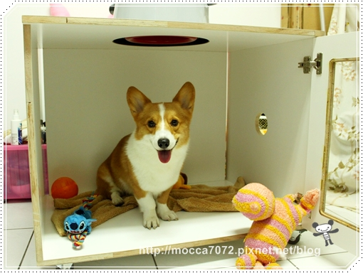
全程都我老木在接洽，所以我也是收到才知烘箱是方的扁的！
不過我原本以為會是木頭顏色的溜！（沒出錢說話不能太大聲啊 ）
）
好笑的是我媽說她也是收到才知烘箱是白色......gif")
（而且木工師傅挺唱秋的～要不是是我媽負責弄，早就翻臉了我！）
箱子上頭挖了放置烘毛機的洞，兩側各也開了一個洞讓空氣可以流通
底部加了輪子方便移動，再裝上壓克力門板隨時監控小孩！完成
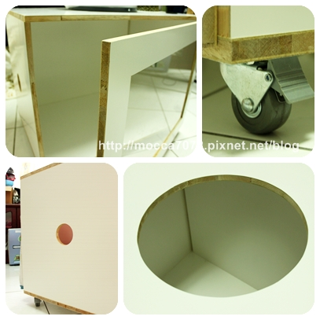
摩卡卡跟胖大星一起坐牢!?猴嗨森啊！
醬以後幫也可以幫阿星洗澡了～不用怕它不會乾！歐耶！
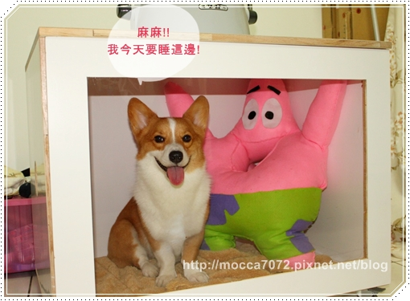
在裡面吞雲吐霧的！好可愛～
他好像真的以為這是買來給他當遊戲間的~噗！.gif")
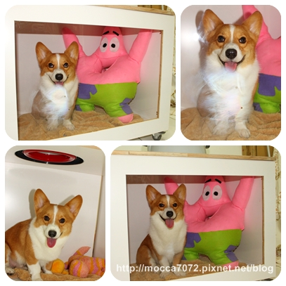
把門關上跟裡面的許同學講話，超好笑的！
聲音會從旁邊兩個小洞傳進去，卡卡耳朵就歪向小洞仔細偷聽！
表示隔音很不錯嘍！？
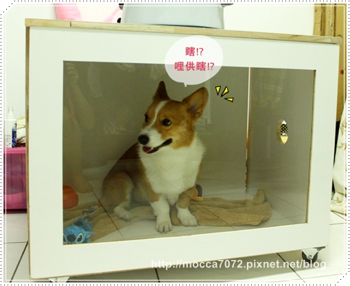
SPA館新開張，所以假日又來洗澡澡啦！
比起上次克難的鐵籠，這次感覺舒服漂釀多啦！
不過可能不熟悉，這次卡卡一開始進去都一直坐著吶！
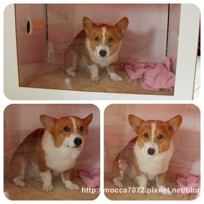
如果不小心跟門外的老木我對到眼，眼神還會默默的飄走....gif")
蛤子長大了都怕羞~呿!
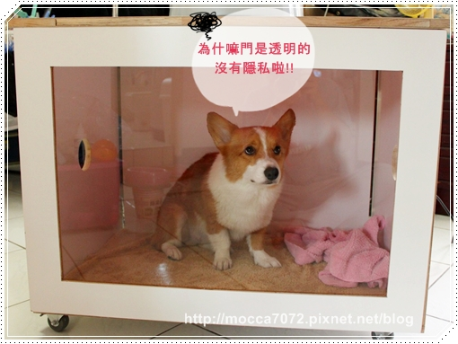
還要擔心頭上的 U佛 隨時會攻擊他！
(ET：快來看！白木屋裡面有隻白目狗！？帶回去解剖。.gif") )
)
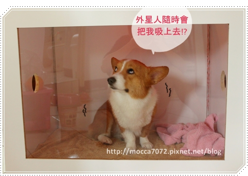
為了讓他安心，來個 "土撥鼠" 洞洞餵食秀，
有吃的一切好辦事兒~~
跟你們說，只有小眼睛才可以當土撥鼠呦！～嘿嘿
沒有土撥鼠是大眼睛的啦！（挺）
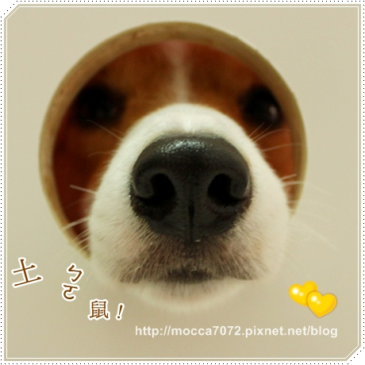
每次看到卡卡塞住洞口就覺得超可愛！
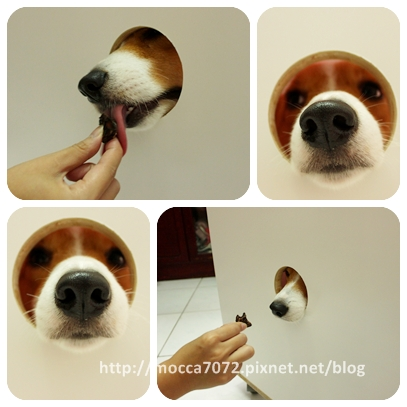
很認真想用"唸力"讓鹿肺掉入口中
只不過吹個頭毛，讓他騙到了一堆小點心吃~嘖嘖嘖
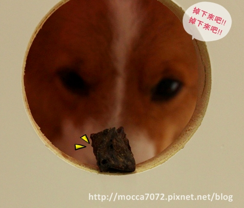
而且我人都坐到正面了，這小子還塞在那個洞等零食！
眼睛都沒有在看啊～～
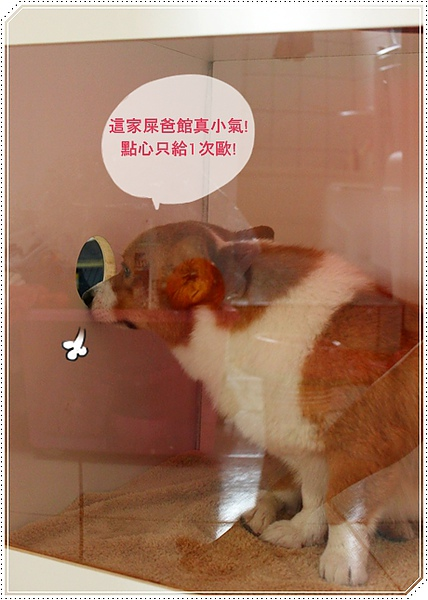
吃完繼續跟老木我乾瞪眼～哈哈哈
我在外面對他又拍又叫的，超級"賣頌"的他！.gif")
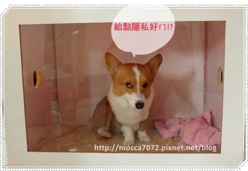
第二回合 ～老北來探監
直接往洞口猛塞，想給拔拔摸摸～
塞那嘛用力萬一拔不出來怎嘛辦啊！！臭小子～.gif")
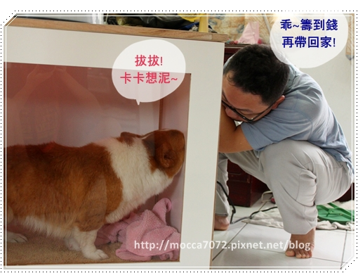
有烘箱後，最爽的其實是猛哥，原則上工作分配是我負責洗狗他負責吹狗
因為他無法彎腰洗卡卡，洗過一次他就再也不洗，自願吹狗！
(好傻好天真!? 明明洗狗輕鬆多惹啊~~ )
)
但這傢伙外務很多，所以我一個人又洗又吹是常有的事！.gif")
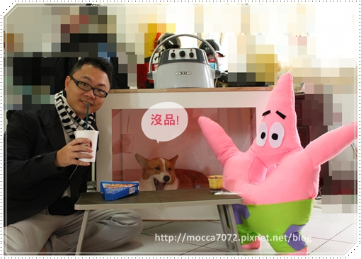
洗完狗總算可以跟阿星悠閒的吃著早午餐，後面那個小傢伙好可年呀！
一直發出低吼聲抗議～
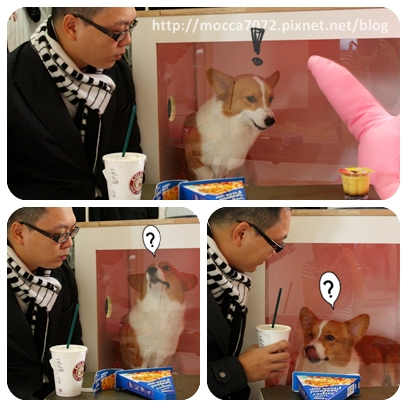
今年秋冬流行，上半身穿西裝外套，下半身運動褲！？
有人為了拍照，衣服只換半套的～哈哈哈 好糗！
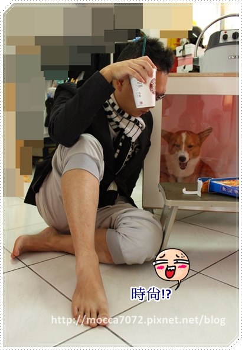
有吃有玩又被欺負的卡卡，終於可以安心的做spa惹！
一直坐在裡面肚菇，超Q的啦！
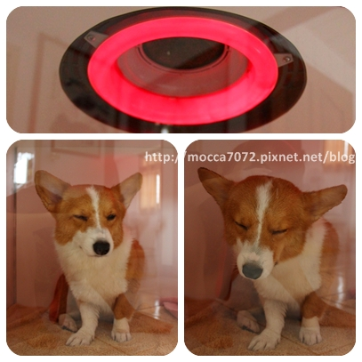
溫度大概調到４５－５０度，大約烘９０分鐘
烘完出來幾乎是９成乾了，再用吹風機補強一下沒烘到的部分就OK了！
而且怕裡面溫度過高，我手一直不時的伸進去測量一下！
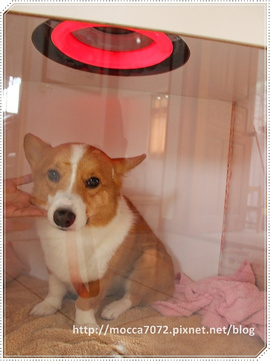
後來葛哥也來探班，我弟一直嚷嚷著他也要一台！哈哈哈
手伸進去裡面超暖和的！冬天手腳冰冷的問題就靠它惹！
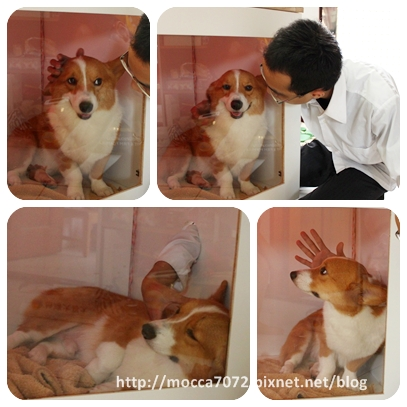
被葛哥搓揉了幾下，卡卡一整個躺平睡翻！
好像在櫥窗欣賞可愛的小幼幼歐！卡哇衣～
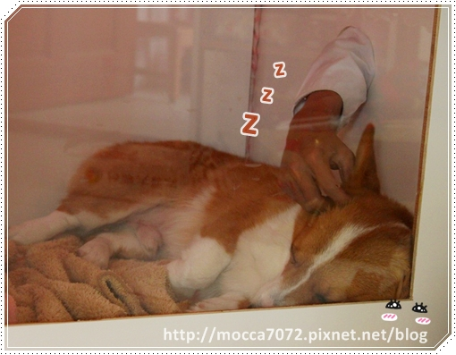
拿出卡內麻送的豬豬給摩卡卡 ㄎㄨㄟˋ桃！
很快又進入夢香啦！
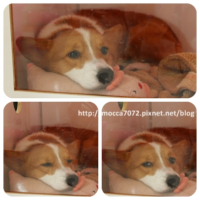
這張是我自己跟卡卡自拍的合照！
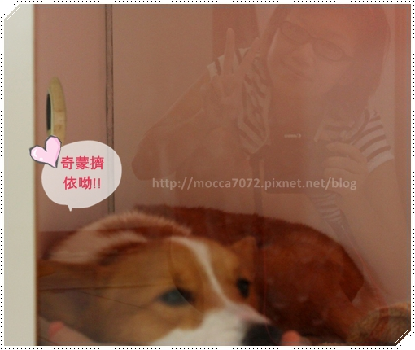
雖然用烘的沒省下多下時間，但洗完澡後把他放進去後就可以做自己的事！
重點是不會毛毛滿天飛呀！.gif")
現在一說要幫卡卡洗澡我積極的咧！XDDDDDDD
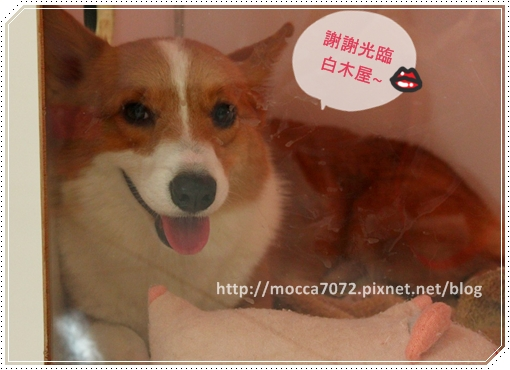
呦呼～這個冬天要在充滿愛的白木屋暖暖的渡過嘍！